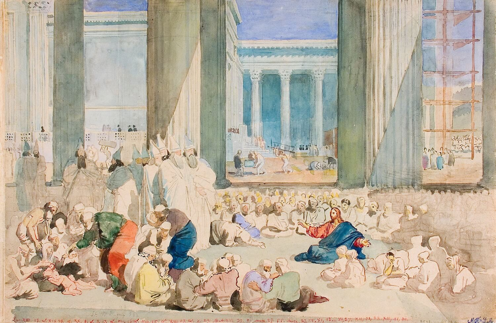
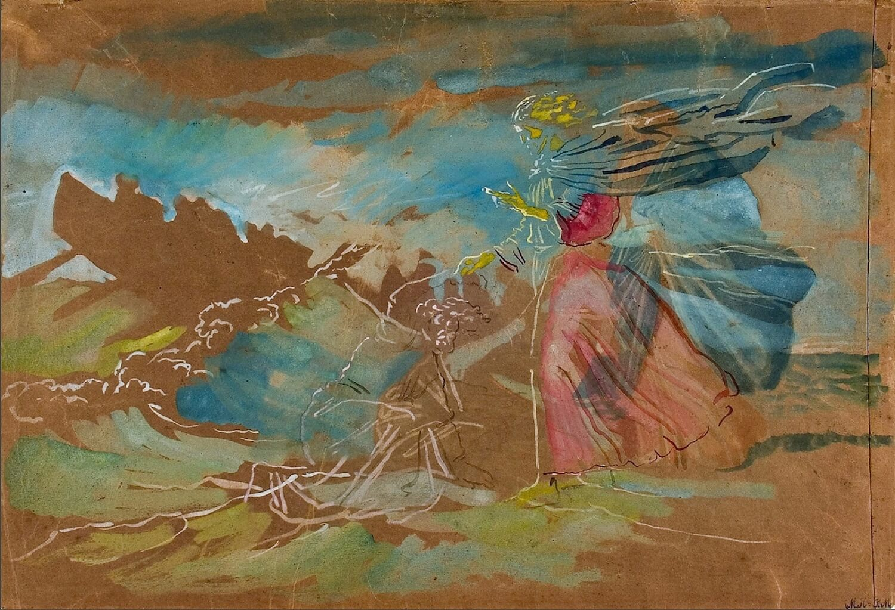
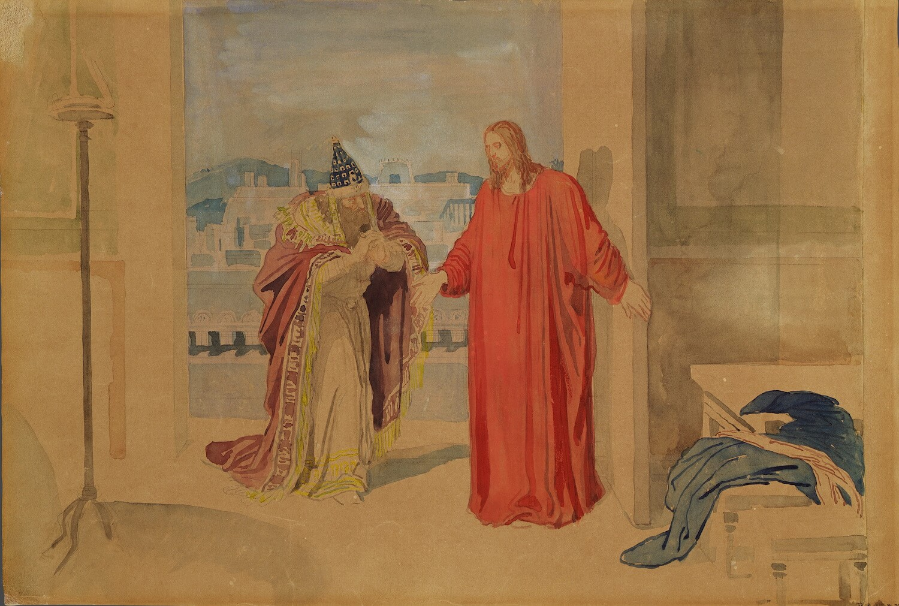

Фотогалерея

А.А. Иванов. Преображение. Конец 1840-х – 1858 ©Государственная Третьяковская галерея

А.А. Иванов. Проповедь Христа в храме. Конец 1840-х – 1858 ©Государственная Третьяковская галерея

А.А. Иванов. Хождение по водам. (Христос спасает начавшего тонуть Петра). Конец 1840-х – 1858 ©Государственная Третьяковская галерея

А.А. Иванов. Христос и Никодим. Конец 1840-х – 1858 ©Государственная Третьяковская галерея
О мероприятии
По замыслу Иванова, эскизы предназначались для будущего воплощения их в настенных росписях «в особо на то посвященном здании, разумеется, не в церкви». Евангельская тема — «жизнь и деяния Христа» — должна была предстать в окружении изображений ветхозаветных, исторических и мифологических сцен, а также библейских текстов. Композиции росписей складывались в сложную систему параллелей, взаимосвязей и сопоставлений.
В «Библейских эскизах» выразились сложные художественно-философские поиски Иванова, связанные с важнейшими для него вопросами — о миссии художника, о роли искусства и его воздействии на нравственное и духовное преобразование мира.
Задуманный художественный ансамбль «Храм искусства», или «Храм философии», можно отнести к романтическим утопиям. Работа Иванова не была завершена. В какой-то мере эта незавершенность выявляет грандиозность замысла, его уникальность как в истолковании библейских текстов, так и в стилистике акварельных композиций.
Выставка «Чудеса и проповеди Христа» посвящена периоду жизни Иисуса, который называют временем его общественного служения. Экспозиция включает работы на темы крещения, призвания учеников, чудес, в том числе знаменитый шедевр художника — эскиз «Хождение по водам (Христос спасает начавшего тонуть Петра)». Значительное место принадлежит акварельным листам со сценами бесед, пророчеств, проповедей, среди них «Христос и самарянка», «Христос и Никодим», «Проповедь Христа в храме». Им свойственны композиционная изобретательность, смелые пространственные и световые эффекты в изображении интерьеров с величественными колоннадами, лестницами. Особая эмоциональность отличает эскизы, на которых Христос предстает перед народом на портике храма, на улицах и площадях, заполненных толпой, выступающей постоянным свидетелем и участником происходящего. Завершенность акварелей, их количество говорят об особом интересе автора к этой теме. Она отвечала размышлениям Иванова о пророческой роли художника...
Читать далее
По замыслу Иванова, эскизы предназначались для будущего воплощения их в настенных росписях «в особо на то посвященном здании, разумеется, не в церкви». Евангельская тема — «жизнь и деяния Христа» — должна была предстать в окружении изображений ветхозаветных, исторических и мифологических сцен, а также библейских текстов. Композиции росписей складывались в сложную систему параллелей, взаимосвязей и сопоставлений.
В «Библейских эскизах» выразились сложные художественно-философские поиски Иванова, связанные с важнейшими для него вопросами — о миссии художника, о роли искусства и его воздействии на нравственное и духовное преобразование мира.
Задуманный художественный ансамбль «Храм искусства», или «Храм философии», можно отнести к романтическим утопиям. Работа Иванова не была завершена. В какой-то мере эта незавершенность выявляет грандиозность замысла, его уникальность как в истолковании библейских текстов, так и в стилистике акварельных композиций.
Выставка «Чудеса и проповеди Христа» посвящена периоду жизни Иисуса, который называют временем его общественного служения. Экспозиция включает работы на темы крещения, призвания учеников, чудес, в том числе знаменитый шедевр художника — эскиз «Хождение по водам (Христос спасает начавшего тонуть Петра)». Значительное место принадлежит акварельным листам со сценами бесед, пророчеств, проповедей, среди них «Христос и самарянка», «Христос и Никодим», «Проповедь Христа в храме». Им свойственны композиционная изобретательность, смелые пространственные и световые эффекты в изображении интерьеров с величественными колоннадами, лестницами. Особая эмоциональность отличает эскизы, на которых Христос предстает перед народом на портике храма, на улицах и площадях, заполненных толпой, выступающей постоянным свидетелем и участником происходящего. Завершенность акварелей, их количество говорят об особом интересе автора к этой теме. Она отвечала размышлениям Иванова о пророческой роли художника...